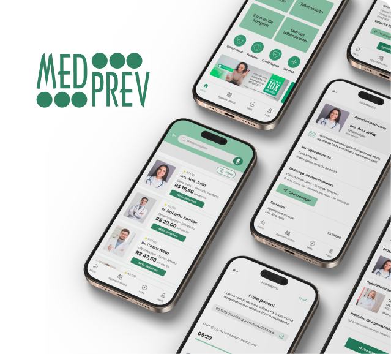
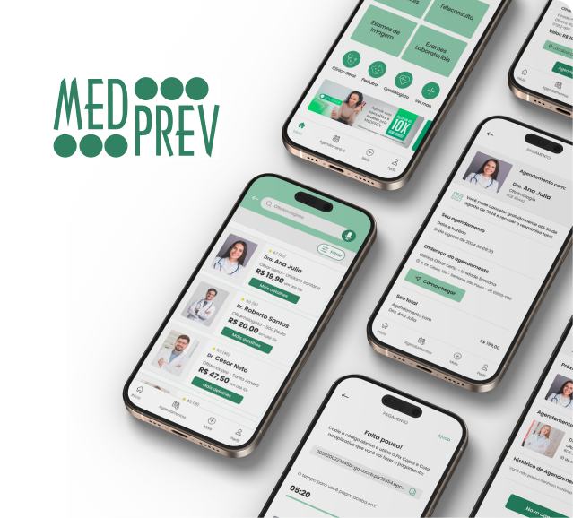
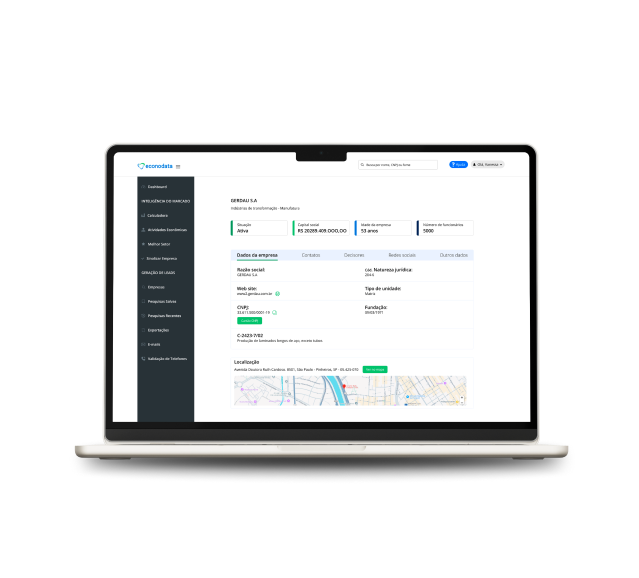
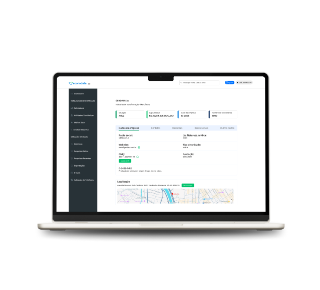
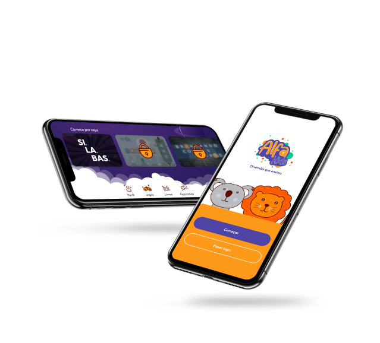
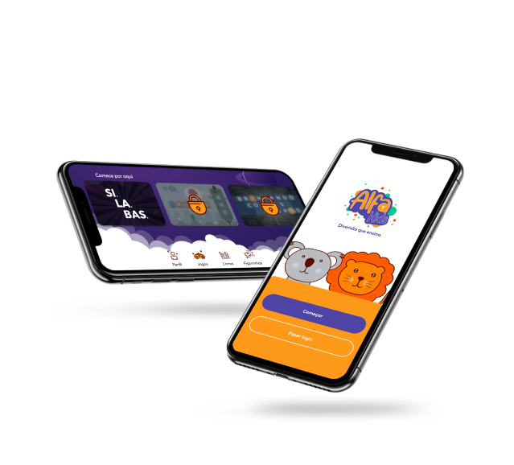

Do abstrato ao protótipo de alta fidelidade
Conte com algumas das principais expertises que ofereço para alcançar seus objetivos de design:
Olá, prazer!💜


Conte com algumas das principais expertises que ofereço para alcançar seus objetivos de design:

Há pouco mais de três anos, venho me dedicando a elevar o padrão de design, com projetos espalhados pelo mundo. Minha jornada no design começou de forma natural, ao criar os layouts para a minha própria empresa. Foi nesse momento que descobri uma paixão latente pela criatividade.
Em 2022, entrei na faculdade de design gráfico, onde me deparei com a fascinante arte do UX/UI Design, que logo se tornou minha área de maior interesse. Além da formação acadêmica, já concluí mais de três cursos especializados, e estou me preparando para iniciar uma pós-graduação em Experiência do Usuário.
Sou movida pela busca constante por conhecimento e inovação, e a leitura de livros sobre UX é uma das minhas principais paixões. Minha missão como designer é clara: criar soluções inovadoras, consistentes e, acima de tudo, centradas no usuário.

Durante o estágio em web design, criei e desenvolvi sites institucionais utilizando WordPress e Elementor, garantindo uma interface intuitiva e uma experiência do usuário fluida. Cada site foi pensado para reforçar a presença digital das marcas, otimizando sua navegação e conteúdo, o que ajudou a aumentar a visibilidade e credibilidade das empresas online.
Como freelancer, especializei-me em branding, onde tive a oportunidade de desenvolver identidades visuais para marcas de diversos segmentos. Fui responsável por criar layouts de social media com foco em conversão, resultando em campanhas de sucesso. Trabalhei com edição de vídeos e manipulação de imagens, além de desenvolver projetos para marcas europeias, elevando meu portfólio com trabalhos internacionais de alto impacto.
No estágio, fui responsável pela criação de layouts para redes sociais e outdoors, além de desenvolver habilidades em ilustrações para estampas. Colaborei diretamente com o time de marketing, criando artes para campanhas publicitárias que aumentaram o engajamento do público. Também produzi catálogos que ajudaram a melhorar a apresentação de produtos e serviços, contribuindo para a comunicação visual da marca.

Amanda Muniz
UX/UI Designer
Vamos começar?
 

 

 
